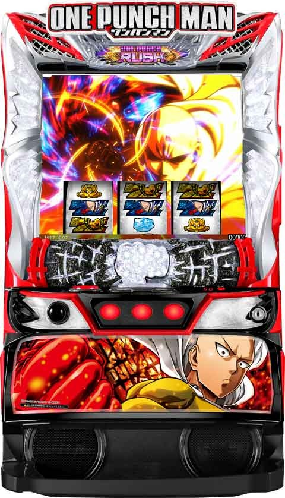
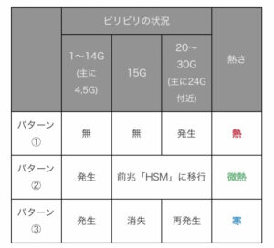
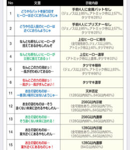
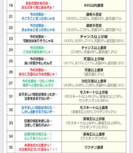
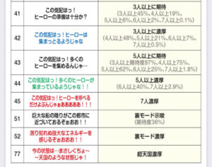
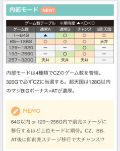

Lワンパンマン

【天井情報】
ゲーム数天井 320G+α CZ突入
CZスルー天井 7回目でマジBB当選
設定変更時は通常B以上濃厚
【リセット判別】
前兆は内部依存で発生
【有利区間について】
差枚プラスで最上位AT突入で有利切れそう。
エンディング到達で不屈チャレンジに突入。失敗時は超天国に移行し128G以内にAT確定のボーナス当選。
狙い目
【リセット狙い】
190Gから
【ゲーム数天井狙い】
210Gから
【ゾーン狙い】
65-128Gゾーン
最上位AT後 0Gから
前回CZ 160-256G当選後 60Gから
前回CZ 128G以内当選後 90Gから
一撃1200枚以上後 70Gから
設定変更後0スルー 100Gから
その他 80Gから
【CZスルー天井狙い】
5スルー 0Gから
4スルー 160Gから
【即前兆狙い】
条件によって、即前兆狙いが出来そう。
・ジババワセリフで緑以上
・ジババワセリフで天国示唆
・一撃1200枚以上後
・前回CZ 160-256G当選後
手順は下記サイトを確認
15Gくらい回してビリビリが消えたらやめ。ビリビリが消えずヒーローモードに行ったら128Gまで。
※ジババワセリフの示唆については多岐に渡るため、緑以上で天国や獲得枚数が増えそうな示唆は確認するなど各自調整。
ジババワセリフが弱くても、ATやCZ終了後4.5Gでビリビリ無しなら天国まで打てそう。

【ジババワ様のありがたい予言狙い】
赤文字 単体で打てそう
緑文字
NO4 不明
NO13 150Gから
NO24 180Gから
NO34 単体？150Gから？
NO44 単体？150Gから？



【有利区間切れ狙い】
差枚+1500枚以上 天国確認まで
やめ時
即前兆確認してやめ？
次回、超天国の場合は128Gフォロー
最上位AT後、不屈チャレンジ後は超天国のため128Gフォロー
その他
内部モード

参考元
基本情報
- メーカー: EXCITE
- 機械割: 97.6% 〜 114.9%
- 導入開始日: 2024年08月05日（月）
- ゲーム性概要: 通常時はゲーム数消化とレア役でCZを目指し、CZクリア後のボーナス中にATを引き当てるゲーム性。AT「ワンパンラッシュ」は100G＋α継続、AT終了後に移行するAT後CZ（コア破壊チャレンジorベストショットチャンス）を突破すれば継続率約90%の特殊AT「ボロスブリッツバトルボーナス（BBBB）」に突入する。さらにBBBBで規定枚数獲得orエンディング到達で最上位ATをかけた「不屈チャレンジ」に突入。最上位ATは純増約4.0枚、継続率約92%と超強力だ。


打ち方
打ち方・小役
打ち方（小役狙い）
［最初に狙う絵柄］

左リール上段付近にBARを目押し。
［BAR下段停止時］ 成立役：ハズレorベルorリプレイorチャンス目

［角チェリー停止時］ 成立役：弱チェリーor強チェリー

［スイカ上段停止時］ 成立役：スイカorチャンス目

［レア役の停止例］

変則押しはNG

ナビ非発生時は左1stでの消化を推奨だ。
強チェリー
強チェリーの抽選まとめ

強チェリー確率は全設定共通で1/799.2と低いぶん、当選時の恩恵が大きくなっている。
強チェリーの恩恵
| 状況 | 恩恵 |
|---|---|
| 通常時 | ● 通常滞在時なら約50%でC.A.C以上に当選 ● 高確滞在時ならC.A.C以上濃厚 ● 超高確滞在時ならキングゾーン濃厚 |
| ゲーム数契機の CZ本前兆中 | ● ヒーロー追加参戦濃厚 |
| C.A.C中 | ● 導入部なら赤or金コイン（A級以上）獲得濃厚 ● 消化中は金コイン（S級）獲得濃厚 |
| キングゾーン中 | ● マジBIG濃厚（AT当選） |
| 怪人襲来CZ中 | ● 導入部なら隕石襲来CZへの昇格濃厚 ● 消化中は10ダメージ以上＋特殊能力発動 ● 7カウントチャンス中はBIG濃厚 |
| BIG中 | ● AT濃厚 |
| AT中 | ● アタックパート×5に当選 ● アタックパート中は10000ダメージ |
| コア破壊 チャレンジ中 | ● 全コア破壊濃厚 |
| ワンパン アタック中 | ● 成功＋バースト状態獲得濃厚 |
解析情報通常時
小役関連
C.A.C＆キングゾーン当選率
通常時のレア役はコインアタックチャレンジ（C.A.C）とキングゾーンを抽選（弱レア役は高確移行も同時抽選）。ダブル抽選ではないので、当選するのはC.A.Corキングゾーンのどちらか。超高確中の強チェリーはキングゾーン濃厚だ。
C.A.C当選率
| 役 | 通常滞在時 | 高確滞在時 | 超高確滞在時 |
|---|---|---|---|
| スイカ・弱チェリー | 1.2% | 12.1% | 96.9% |
| チャンス目 | 12.1% | 63.3% | 75.0% |
| 強チェリー | 46.9% | 87.5% | － |
キングゾーン当選率
| 役 | 通常滞在時 ※ | 高確滞在時 | 超高確滞在時 |
|---|---|---|---|
| スイカ・弱チェリー | － | 0.4% | 3.1% |
| チャンス目 | 0.4% | 3.1% | 25.0% |
| 強チェリー | 3.1% | 12.5% | 100% |
※通常滞在時は設定1の抽選値
高確・超高確当選率
| 役 | 高確へ | 超高確へ |
|---|---|---|
| 共通ベル | 5.9% | － |
| 弱チェリー | 37.1% | 0.4% |
| スイカ | － | 4.7% |
スイカ契機での移行は超高確のみなので、高確の挙動（夕方ステージなど）をとれば超高確濃厚だ。
レア役確率
| 設定 | スイカ | 弱チェリー | チャンス目 | 強チェリー |
|---|---|---|---|---|
| 1 | 1/99.1 | 1/69.7 | 1/266.4 | 1/799.2 |
| 2 | 1/96.4 | 1/68.1 | 1/266.4 | 1/799.2 |
| 3 | 1/93.8 | 1/66.5 | 1/266.4 | 1/799.2 |
| 4 | 1/90.4 | 1/64.8 | 1/266.4 | 1/799.2 |
| 5 | 1/85.7 | 1/62.5 | 1/266.4 | 1/799.2 |
| 6 | 1/79.9 | 1/59.9 | 1/266.4 | 1/799.2 |
内部状態関連
高確・超高確
共通ベルと弱レア役で高確および超高確移行を抽選。高確・超高確ではコインアタックチャレンジ（C.A.C）とキングゾーンの当選率が優遇される。
保証ゲーム数
| 内部状態 | ゲーム数 |
|---|---|
| 高確 | 10Gor20G |
| 超高確 | 20G |
モード
通常モード
通常時は5種類のモードでCZ当選のゲーム数テーブルやヒーローストックゾーンのストック期待度が変化。モードは基本的にCZ終了後に抽選、各モード消化中は、レア役で天国モードに書き換えられる場合もある。
通常モードごとの特徴
| モード | 特徴 | CZ天井 |
|---|---|---|
| 通常A | 50%以上で次回通常B以上へ | 320G |
| 通常B | 50%以上で次回チャンス以上へ | 320G |
| チャンス | 超天国移行のチャンス | 320G |
| 天国 | 次回は全モード移行の可能性あり | 128G |
| 超天国 | 128G以内のAT当選濃厚、 次回は通常B以上へ | 128G |
通常モードのCZ当選ゲーム数テーブル
| ゲーム数 | 通常A | 通常B | チャンス | （超）天国 |
|---|---|---|---|---|
| 1～64G | △ | ◯ | ◎ | ◎ |
| 65～128G | ◎ | ◎ | ◎ | 天井 |
| 129～192G | － | － | ◯ | － |
| 193～256G | － | ◯ | ◎ | － |
| 257～320G | 天井 | 天井 | 天井 | － |
設定変更後・BBBB終了後のモード振り分け
| 移行先 | 振り分け |
|---|---|
| 通常A | － |
| 通常B | 53.1% |
| チャンス | 16.4% |
| 天国 | 30.1% |
| 超天国 | 0.4% |
［前回通常A］CZ終了後のモード振り分け
| 設定 | 通常A | 通常B | チャンス | 天国 | 超天国 |
|---|---|---|---|---|---|
| 1 | 49.6% | 25.0% | 6.3% | 18.8% | 0.4% |
| 2 | 47.7% | 25.8% | 6.6% | 19.5% | 0.4% |
| 3 | 45.7% | 26.6% | 7.0% | 20.3% | 0.4% |
| 4 | 43.0% | 27.3% | 7.4% | 21.1% | 1.2% |
| 5 | 41.0% | 28.1% | 7.8% | 21.9% | 1.2% |
| 6 | 39.1% | 28.9% | 8.2% | 22.7% | 1.2% |
［前回通常B］CZ終了後のモード振り分け
| 設定 | 通常A | 通常B | チャンス | 天国 | 超天国 |
|---|---|---|---|---|---|
| 1 | － | 49.6% | 12.5% | 37.5% | 0.4% |
| 2 | － | 48.4% | 12.9% | 38.3% | 0.4% |
| 3 | － | 47.3% | 13.3% | 39.1% | 0.4% |
| 4 | － | 45.3% | 13.7% | 39.8% | 1.2% |
| 5 | － | 44.1% | 14.1% | 40.6% | 1.2% |
| 6 | － | 43.0% | 14.5% | 41.4% | 1.2% |
裏ボスモード概要
CZ成功でワンパンラッシュ（AT）以上濃厚となるモード で、いきなりボロスブリッツバトルボーナスや超ワンパンアタックへ移行することもある。ループ性があるので、CZで失敗してもモードが継続する可能性がある。 滞在しているどうかは基本的にわからないが、ボス登場画面でPUSHボタンを押してネガポジ反転したら裏ボスモード滞在濃厚だ。
裏ボスモードの継続・非継続振り分け
| 裏ボスモード | 振り分け |
|---|---|
| 継続 | 64.1% |
| 非継続 | 35.9% |
［ネガポジ反転］

ヒーローサーチモード（前兆）
ヒーローサーチモード概要

CZ当選を目指す前兆ゾーンだ。
ゲーム数当選の本前兆中の抽選
ゲーム数契機のCZ本前兆中はレア役でヒーローストックを抽選。強チェリーならストック濃厚となる。
コイン・アタック・チャレンジ（C.A.C）
C.A.C概要

レア役で抽選されるCZ移行を目指すサブCZ的な存在。チャレンジに成功すればヒーローストックゾーンを経由してCZへ突入する。
［ヒーローに応じて抽選］

表示されたヒーローを成立役に応じてストック抽選。ストックしたヒーローで怪人を撃破することができれば成功だ。
C.A.C中のヒーロー参戦当選率
| 役 | C級 | B級 | A級 | S級 |
|---|---|---|---|---|
| ハズレ | 0.4% | 6.3% | 40.2% | 100% |
| ベル・リプレイ | 0.8% | 45.3% | 67.2% | 100% |
| 弱チェリー・スイカ | 20.3% | 67.2% | 100% | 100% |
| チャンス目 | 67.2% | 100% | 100% | 100% |
| 強チェリー | 100% | 100% | 100% | 100% |
ヒーローのランクによって当選率が変化する。
［コインの色で判別可能］

ランクは青＜緑＜赤＜金で、赤ならA級＝大チャンス、金ならS級＝参戦濃厚だ。
ヒーローストックゾーン
ヒーローストックゾーン概要

怪人襲来CZの導入的な10Gのゾーン。突入した時点でヒーロー1人がストックされ、消化中は怪人襲来CZで登場するヒーローを抽選する。 ノーマル＜温＜熱の3種類があり、上位のパターンほどヒーローをストックしやすい。 当選確率は約1/160。
［ノーマル］

［温］

［熱］

熱なら最低でもヒーローを3人以上獲得できるので大チャンスだ。
ヒーローストックゾーンの種別振り分け
| 設定 | 通常 | 温 | 熱 |
|---|---|---|---|
| 1 | 75.0% | 20.3% | 4.7% |
| 2 | 73.8% | 21.1% | 5.1% |
| 3 | 72.7% | 21.9% | 5.5% |
| 4 | 71.5% | 22.7% | 5.9% |
| 5 | 70.3% | 23.4% | 6.3% |
| 6 | 69.1% | 24.2% | 6.6% |
獲得ヒーロー振り分け
| 人数 | 通常（表記なし） | 温 | 熱 |
|---|---|---|---|
| 1人 | 85.5% | 25.0% | － |
| 2人 | 10.5% | 54.3% | － |
| 3人 | 3.1% | 17.2% | 50.0% |
| 4人 | 0.4% | 2.3% | 37.5% |
| 5人 | 0.4% | 1.2% | 10.9% |
| 6人 | － | － | 1.6% |
熱なら3人以上濃厚となる。
怪人襲来CZ
怪人襲来CZ概要

ボーナス当選のメイン契機。ヒーローストックゾーンで獲得したヒーローが怪人を撃破できればボーナスとなる。ヒーローが全員敗北するまで継続するので、ゲーム数は不定。 ヒーローごとに様々な特性がある。 消化中は 出撃中のヒーローと成立役を参照してダメージを抽選 。ヒーローの攻撃でK.O.確率を上げていき、 ラストの7カウントチャンスでK.O.を引き当てることができれば成功 だ。
怪人襲来CZ性能
| 項目 | 内容 |
|---|---|
| 当選契機 | C.A.C成功、規定ゲーム数消化 |
| 継続ゲーム数 | 不定 |
| 消化中の抽選 | リプレイやレア役でK.O.確率＆K.O.ゲージアップ、 レア役時は特殊能力発動も抽選 |
| 成功条件 | K.O.チャンスや7カウントチャンスで撃破に当選 ※レア役時の一発勝利抽選もあり |
| その他 | ヒーローが全員負けると7カウントチャンスへ移行 |
怪人の種類
| 怪人 | 勝利期待度 |
|---|---|
| 阿修羅カブト | 弱 |
| モスキート娘 | ↓ |
| 深海王 | 強 |
ヒーローごとのバトル特殊能力＆継続期待度
| ヒーロー | 特殊能力 | 継続期待度 |
|---|---|---|
| ぷりぷりプリズナー | 無敵（ショート） | 低 |
| 金属バット | 次ゲームに1/5で勝利 | 低 |
| ジェノス | 次ゲームでダメージ性能2段階上昇 | 中 |
| 地獄のフブキ | 次ゲームでダメージ性能1段階上昇、 敗北時の約20%でタツマキが登場 | 中 |
| アトミック侍 | 次ゲームに1/3で勝利 | 高 |
| シルバーファング | 無敵（ロング） | 高 |
| 戦慄のタツマキ | 次ゲームでダメージ性能3段階上昇 | 激高 |
［怪人］

［出動するヒーロー］

［ダメージ］（K.O.ゲージ）

ヒーローのダメージを与えるごとにK.O.確率がアップ。ゲージがMAX（5個点灯）になった次ゲーム（K.O.チャンス）ではK.O.確率に応じて成功を一発抽選するので、７カウントチャンス移行前に勝利することもある。
［7カウントチャンス］

アップさせたK.O.確率で7G間、毎ゲームCZ成功を抽選。レア役成立でゲーム数を再セット、強チェリーなら撃破濃厚となる。ここでヒーローが参戦すればCZ本編に復帰、無免ライダー参戦時は7Gが再セット。リールロックが発生すればその時点で期待度約50%だ。
［怪人エピソード］

CZ中にエピソードが流れればマジBIG（AT当選）濃厚だ。
ダメージ当選率トータル
| ヒーロー | その他 | ベル | リプレイ | レア役 |
|---|---|---|---|---|
| ぷりぷりプリズナー | 41.4% | 約60% | 100% | 100% （3pt以上） |
| 金属バット | 34.8% | 約60% | 100% | 100% （3pt以上） |
| ジェノス | 48.4% | 約60% | 100% | 100% （3pt以上） |
| 地獄のフブキ | 37.1% | 約60% | 100% | 100% （3pt以上） |
| アトミック侍 | 44.5% | 約60% | 100% | 100% （3pt以上） |
| シルバーファング | 64.5% | 約60% | 100% | 100% （3pt以上） |
| 戦慄のタツマキ | 61.7% | 約60% | 100% | 100% （3pt以上） |
リプレイ成立時は内部的にその他と同じ抽選をしてから 、1段階上のダメージに書き換え 。この抽選でダメージ非当選の場合は1ptに、1ptの場合は2ptになる。ベルも同様で、この抽選を 約60% でおこなう。 また、K.O.チャンス中はダメージ非当選でも必ず1ptのダメージを与えることが可能。 レア役時は3pt以上のダメージに加え、 特殊能力発動 も抽選 される（チャンス目・強チェリーは発動濃厚）。
［その他］ダメージ当選率詳細
| ヒーロー | 1pt | 2pt | 3pt | 5pt |
|---|---|---|---|---|
| ぷりぷりプリズナー | 30.5% | 10.2% | 0.8% | － |
| 金属バット | 14.1% | 17.2% | 3.1% | 0.4% |
| ジェノス | 35.2% | 11.7% | 1.6% | － |
| 地獄のフブキ | 27.0% | 9.4% | 0.8% | － |
| アトミック侍 | 16.8% | 22.3% | 4.7% | 0.8% |
| シルバーファング | 60.9% | 3.1% | 0.4% | － |
| 戦慄のタツマキ | 51.6% | 9.4% | 0.8% | － |
［レア役］ダメージ当選率 ※ヒーロー共通
| ダメージ | 弱チェリー | スイカ | チャンス目 | 強チェリー |
|---|---|---|---|---|
| 3pt | 79.7% | 96.9% | 76.6% | － |
| 5pt | 19.9% | － | 19.9% | － |
| 10pt | 0.4% | － | 0.4% | 79.7% |
| 20pt | － | 3.1% | 3.1% | 20.3% |
［特殊能力］

特殊能力はヒーローに応じて変化！
隕石襲来CZ
隕石襲来CZ概要

怪人襲来CZ導入シーン中（扉表示〜ヒーロー登場まで）などのレア役時に昇格する可能性がある上位CZ。計3回のジャッジをクリアできればボーナスとなる。消化中のレア役はボーナス濃厚だ。
隕石襲来CZ性能
| 項目 | 内容 |
|---|---|
| 当選契機 | 怪人襲来CZ導入部からの昇格（レア役契機） |
| 継続ゲーム数 | 継続ジャッジ3回 |
| 消化中の抽選 | 継続ジャッジ3回クリアでボーナス、 レア役当選時はボーナス濃厚 |
| 成功期待度 | 約85% |
| その他 | レア役はボーナス濃厚 |
キングゾーン（確定CZ）
キングゾーン概要

レア役契機で突入する可能性があるBIG以上濃厚の確定CZ。15G以内に成功すればマジBIG濃厚となる。
［全役で成功抽選］

キングゾーン中のマジBIG当選率
| 役 | 当選率 |
|---|---|
| ハズレ | 1.2% |
| ベル・リプレイ | 4.7% |
| スイカ・弱チェリー | 20.3% |
| チャンス目 | 71.9% |
| 強チェリー | 100% |
※失敗した場合はBIGに当選
演出動画
ロングフリーズ
リプレイの一部で発生。実戦上の恩恵はマジBIGボーナス＋BBBB突入となっていた。
解析情報ボーナス時
BIGボーナス（マジBIG含む）
ボーナス準備中

準備中はレア役でマジBIG（金7揃い）への昇格を抽選。強チェリーを引けば昇格濃厚だ。
BIGボーナス概要

BIG中はチャンス告知・完全告知を選択可能。 チャンス告知選択時はレア役でヒーローモード（3種類の7揃い高確）移行を抽選して、ヒーローモード中に 7揃いすればAT濃厚 だ（最終告知選択時は発生しない）。 ほかにも最終ゲームのレア役などで発生する期待度約50%の連打や、ボロスブリッツバトルボーナス濃厚のサイタマランプ点灯など様々な要素がある。
BIGボーナス性能
| 項目 | 内容 |
|---|---|
| 当選契機 | CZ成功、直撃など（青7揃い） |
| 継続ゲーム数 | 45G＋α |
| 純増 | 約2.5枚/G |
| AT突入期待度 | 約50% |
| 消化中の抽選 | ヒーローモード移行、7揃い（AT）抽選 |
| その他 | チャンス告知・最終告知から任意に選択可能 |
［ヒーローモード：ジェノススタイル］

［ヒーローモード：ガールズスタイル］

［ヒーローモード：サイタマスタイル］

［最終告知］

［最終ゲームの連打］

マジBIGボーナス概要

当選した時点でワンパンラッシュ（AT濃厚）となるボーナスだ。
マジBIGボーナス性能
| 項目 | 内容 |
|---|---|
| 当選契機 | CZ成功、直撃、準備中の昇格など（金7揃い） |
| 継続ゲーム数 | 45G＋α |
| 純増 | 約2.5枚/G |
| 消化中の抽選 | 調査中 |
| その他 | 当選した時点でAT濃厚 |
コア破壊チャレンジ概要

AT（バトルモード選択時）終了後に突入するボロスブリッツバトルボーナス（BBBB）をかけたCZ。中1stベルを引けばコアを破壊、右1stベルを引くと失敗でコア破壊チャレンジの権利が1つ消費される。 最終的に5つのコアをすべて破壊できればBBBB濃厚 。中1stベルで成功している限りコア破壊チャレンジの権利は消費されないので、権利が少ない場合でもヒキ次第で勝利することができる。 強チェリー成立時は全コア破壊濃厚 だ。
コア破壊チャレンジ性能
| 項目 | 内容 |
|---|---|
| 移行契機 | AT（バトルモード）終了後 |
| 継続ゲーム数 | 右1stベルで全権利を消費するまで |
| 純増 | 約2.5枚/G |
| 成功条件 | 中1stベル最大5回（コア全破壊） ※レア役での破壊抽選もあり |
| その他 | 成功後はBBBBへ移行 |
［中1stベルでコア破壊］

［右1stベルで失敗］

［全コア破壊でBBBB］

AT（7揃いフラグ）抽選

ヒーローモード中はレア役を引けば高確率で7揃い（AT当選）へ直結。サイタマスタイル中は7揃い濃厚で、消化中のレア役で金7揃い（AT＋BBBB）が抽選される。最終ゲームでレア役を引けば期待度約50%の連打発生濃厚、非レア役時の連打は設定4以上で発生しやすい。
BIG中の7揃い（AT）確率
| フラグ | 確率 |
|---|---|
| 狙えフェイク | 1/14.0 |
| 青7揃い | 1/133.2 |
| 金7揃い | 1/8192.0 |
ヒーローモード移行時の7揃い期待度
| ヒーローモード | 期待度 |
|---|---|
| ジェノススタイル | 約50% |
| ガールズスタイル | 約75% |
| サイタマスタイル | 100% |
※ヒーローモードはチャンス告知選択時のみ ※チャンス目以上でヒーローモード濃厚、強チェリーはサイタマスタイル濃厚
［ジェノススタイル］滞在中の各種当選率
| 役 | あおりのみ | 狙えフェイク | 青7揃い | 金7揃い |
|---|---|---|---|---|
| その他 | 46.7% | 42.8% | 10.5% | 0.05% |
| スイカ | － | 25.0% | 74.2% | 0.8% |
| 弱チェリー | － | 25.0% | 74.2% | 0.8% |
| チャンス目 | － | － | 96.9% | 3.1% |
| 強チェリー | － | － | 75.0% | 25.0% |
［ガールズスタイル］滞在中の各種当選率
| 役 | あおりなし | あおりのみ | 青7揃い | 金7揃い |
|---|---|---|---|---|
| その他 | 36.1% | 42.8% | 21.0% | 0.1% |
| スイカ | － | － | 99.2% | 0.8% |
| 弱チェリー | － | － | 99.2% | 0.8% |
| チャンス目 | － | － | 96.9% | 3.1% |
| 強チェリー | － | － | 75.0% | 25.0% |
［サイタマスタイル］当選時の7種別振り分け
| 7揃い | 振り分け |
|---|---|
| 青7揃い | 93.8% |
| 金7揃い | 6.3% |
［サイタマスタイル］滞在中の金7揃い昇格率
| 役 | 昇格率 |
|---|---|
| スイカ | 1.2% |
| 弱チェリー | 1.2% |
| チャンス目 | 25.0% |
| 強チェリー | 100% |
［最終ゲーム/レア役時］AT当選率
| 役 | 連打なし＆失敗 | 連打失敗 | 連打成功 |
|---|---|---|---|
| スイカ | － | 50.0% | 50.0% |
| 弱チェリー | － | 50.0% | 50.0% |
| チャンス目 | － | 20.3% | 79.7% |
| 強チェリー | － | － | 100% |
カットインごとの期待度はコチラ
ワンパンラッシュ（AT）
AT準備中の抽選

AT準備中はレア役でコア破壊チャレンジ（またはベストショットチャンス）の権利ストックを抽選。強チェリーならストック濃厚となる。
AT概要（バトルモード選択）

AT中は「バトルモード」と「常夏すぷらっしゅモード」の2種類から選択可能。 バトルモードは、 リプレイorレア役でアタックパートへ移行して、アタックパート中のリプレイorレア役で敵のライフを削っていく ゲーム性で、ライフを0にするごとに「コア破壊チャレンジの権利1回分」をストック。AT終了後は「コア破壊チャレンジの権利」を使ったコア破壊チャレンジでボロスブリッツバトルボーナス（BBBB）を目指す流れだ。
さらにAT中はベル成立時に貯まるベルポイントがMAXになると 先制破壊チャンス でコア破壊チャレンジのコアを事前に破壊することもできる。
ワンパンラッシュ（AT）性能 ※バトルモード選択時
| 項目 | 内容 |
|---|---|
| 移行契機 | BIG中の当選、マジBIGなど |
| 継続ゲーム数 | 100G＋α |
| 純増 | 約2.5枚/G |
| 消化中の抽選 | コア破壊チャレンジ権利ストック、ベルメーター |
| その他 | 終了後はコア破壊チャレンジへ |
［アタックパート］

［アタックパート倍率］

倍率が付けば大ダメージのチャンスだ（2〜5倍）。
［先制破壊チャンス］

BARが揃えばコアを1つ破壊できる。
AT概要（常夏すぷらっしゅモード選択）

抽選内容はバトルモードとすべて同じで、リプレイorレア役で内部的にポイントを獲得していくゲーム性。 ただし、バトルモードのように敵ライフを削って撃破すればストック獲得という流れではなく、プレゼントを獲得して、 AT終了時のプレゼントチェックでプレゼントが開封→結果がわかるという後告知タイプだ 。 プレゼントから出てくる「ベストショット」がバトルモードでいう「コア破壊チャレンジの権利1回分」に相当。終了後はベストショットチャンスでBBBBを目指すことになる。
ワンパンラッシュ（AT）性能 ※常夏すぷらっしゅモード選択時
| 項目 | 内容 |
|---|---|
| 移行契機 | BIG中の当選、マジBIGなど |
| 継続ゲーム数 | 100G＋α |
| 純増 | 約2.5枚/G |
| 消化中の抽選 | ベストショットチャンス権利ストック |
| その他 | 終了後はベストショットチャンスへ |
見た目上、ベルメーターはないが、内部的にはバトルモードと同じく抽選されている。
［多彩なナビアクション］

［夕方ステージ］

［夜ステージ］

夕方移行でチャンス、夜移行でプレゼント獲得の大チャンスだ。
［プレゼント獲得］

プレゼントを獲得するほど期待できる。
［プレゼントチェック］

プレゼントを開封していくベストショットが出ればベストショットチャンスの権利1回分を獲得。マジベストショットならAT当選濃厚だ。
AT中の抽選
| 抽選 | 序列など |
|---|---|
| ベルポイント MAX時 | 約25%でBAR揃い（コア破壊成功） |
| アタックパート 倍率 | 弱レア役：2倍以上、チャンス目：3倍以上、 強チェリー：5倍 |
| アタックパート中 ダメージ | 左or右1stベル＜中1stベル・リプレイ＜ 弱レア役＜チャンス目＜強チェリー ※リプレイ・レア役はアタックパートゲーム数を1G加算 |
アタックパートのダメージ振り分け
| ダメージ | ハズレ | 中1stベルor リプレイ | 右1stベルor 共通ベル |
|---|---|---|---|
| 0pt | 100% | － | － |
| 500pt | － | － | 82.8% |
| 1000pt | － | 79.3% | 12.5% |
| 2000pt | － | 16.4% | 3.1% |
| 3000pt | － | 3.9% | 1.2% |
| 5000pt | － | 0.4% | 0.4% |
| 10000pt | － | － | － |
| ダメージ | 弱チェリーor スイカ | チャンス目 | 強チェリー |
| 0pt | － | － | － |
| 500pt | － | － | － |
| 1000pt | － | － | － |
| 2000pt | － | － | － |
| 3000pt | 87.1% | － | － |
| 5000pt | 12.5% | 87.5% | － |
| 10000pt | 0.4% | 12.5% | 100% |
コア破壊チャレンジ（AT後CZ）
マジコア破壊チャレンジ概要

突入した時点で全コア破壊＝BBBB濃厚となるコア破壊チャレンジのプレミアムバージョンだ。
ベストショットチャンス（AT後CZ）
ベストショットチャンス概要

AT終了後（常夏すぷらっしゅモード選択時）に突入するボロスブリッツバトルボーナス（BBBB）をかけたCZ。ゲーム性はバトルモード選択時のコア破壊チャレンジとすべて同じ。中1stベルを引けば撮影成功、右1stベルを引くと失敗で権利が1つ消費。 最終的に5回成功すればBBBB濃厚 となる。 強チェリー成立時は5回成功濃厚だ。
ベストショットチャンス性能
| 項目 | 内容 |
|---|---|
| 移行契機 | AT（バトルモード）終了後 |
| 継続ゲーム数 | 右1stベルで全権利を消費するまで |
| 純増 | 約2.5枚/G |
| 成功条件 | 中1stベル最大5回（5回成功） ※レア役での成功抽選もあり |
| その他 | 成功後はBBBBへ移行 |
［中1stベルで撮影成功］

［右1stベルで失敗］

［5回成功でBBBB］

成功時の写真内容の組み合わせには秘密が!?
マジベストショットチャンス概要

ベストショットチャンスのプレミアムバージョンで、マジコア破壊チャレンジと同じく成功濃厚となる。
不屈チャレンジ
不屈チャレンジ概要

成功すればボロスブリッツバトルボーナスマキシマム（最上位AT）＋バースト状態へ突入。失敗しても超天国モードへ移行するため、AT当選（128G以内に当選）まで続行しよう。
不屈チャレンジ性能
| 項目 | 内容 |
|---|---|
| 移行契機 | エンディング後、 ワンパンチャレンジでの規定枚数到達時 |
| 成功期待度 | 約53% |
| 継続ゲーム数 | 右1st成立まで!? |
| 消化中の抽選 | 中1stベルorレア役成立で成功 |
| その他 | 成功で最上位ATへ、失敗しても超天国モード |
ボロスブリッツバトルボーナス（BBBB）
BBBB概要

おもにAT後CZ成功で突入する特殊なボーナスで、終了後に突入する ワンパンアタックと約90%でループ するため強力な破壊力を発揮。消化中はBBBBの継続ストックやBAR揃いの一部でバースト状態移行が抽選される。 バースト状態 ではBAR揃いやレア役でバースト自体のゲーム数を、中1stベルでBBBBのゲーム数を上乗せ。中1stベルで必ずゲーム数が上乗せされるのでかなりアツい。
BBBB性能
| 項目 | 内容 |
|---|---|
| 移行契機 | AT後CZ成功など |
| 継続ゲーム数 | 10G＋α/セット |
| 純増 | 約2.5枚/G |
| 消化中の抽選 | 継続ストック、バースト状態移行抽選 ※バースト中はゲーム数上乗せも抽選 |
| その他 | 終了後はワンパンアタックへ |
| その他 | ワンパンアタックとのループ率は約90% |
［継続ストック］

［バースト状態］

バースト状態移行でBBBBのゲーム数減算はストップ。 強チェリー成立時はバースト状態自体のゲーム数を10Gor20Gを上乗せ！
継続ストック（最強の男）当選率
| 役 | 当選率 |
|---|---|
| チャンス目 | 約50% |
| 強チェリー | 100% |
継続時のバースト状態当選率
| ループ中のAT | 当選率 |
|---|---|
| BBBB | 約10% |
| 最上位AT | 約30% |
最上位AT時は約30%でバースト状態を上乗せ。また、最上位AT経由の3回目（ファイナルアタック）で成功した場合は必ずバーストが上乗せされる。バースト中は強チェリーでバースト自体のゲーム数を10or20G上乗せする。
［ファイナルアタック］

ボロスブリッツバトルボーナスマキシマム（最上位AT）
最上位AT概要

純増も約4.0枚/G、継続率約92％の最上位AT。ボロスブリッツバトルボーナス（BBBB）と同じく、終了後のワンパンアタックとのループで出玉を増やすゲーム性で、バースト状態移行率がBBBBよりも大幅にアップしている。 不屈チャレンジと同じく、終了後は超天国モードへ移行する。
最上位AT性能
| 項目 | 内容 |
|---|---|
| 移行契機 | 不屈チャレンジ成功など |
| 継続ゲーム数 | 10G＋α/セット |
| 純増 | 約4.0枚/G |
| 消化中の抽選 | 継続ストック、バースト状態移行抽選 ※バースト中はゲーム数上乗せも抽選 |
| その他 | 終了後はループ率約92%のワンパンアタックへ、 失敗した場合でも超天国モードへ |
ワンパンアタック
ワンパンアタック概要

3回右1stベルを引く前に 中1stベルを引けば成功 となりボロスブリッツバトルボーナス（BBBB）へ移行。3回連続で成功（右1stベルを引かずに3連続でループ）した場合はBBBBのセットストック獲得のチャンス。 成功時の一部でバースト状態の上乗せを獲得できる。 また、 BBBBとのループで250枚獲得するごとに「不屈チャレンジ」を抽選 （成功で最上位ATへ移行）。最大2250枚で必ず不屈チャレンジが発生する。
ワンパンアタック性能
| 項目 | 内容 |
|---|---|
| 移行契機 | BBBBや最上位AT終了後など |
| 継続ゲーム数 | 右1st・中1stベルが累計3回成立まで ※最上位AT後は5回 |
| 純増 | 約2.5枚or4.0枚/G |
| 消化中の抽選 | 中1stベル成立で成功 ※レア役での成功抽選もあり |
| その他 | BBBBとのループで250枚到達ごとに 不屈チャレンジを抽選（天井2250枚） ※当選時はワンパンアタック最終ゲームで突入 |
［リール表示＆連続成功回数］

リール下部にはどの1stベルを引けばいいか表示。リール左側には連続成功回数が表示されている。
［中1stベルで成功］

［超ワンパンアタック］

突入時の一部で移行する超ワンパンアタックは成功以上濃厚。
継続時のバースト状態当選率
| 役 | 当選率 |
|---|---|
| 中1stベル | 8.9% |
| 弱レア役 | 30.9% |
| チャンス目 | 67.6% |
| 強チェリー | 100% |
レア役で継続した場合は高確率でバースト状態へ移行。強チェリー時はバースト状態移行濃厚だ。
ツラヌキ・有利区間
ツラヌキ時の恩恵
| 項目 | 内容 |
|---|---|
| 条件 | エンディング到達時 |
| 恩恵 | 不屈チャレンジ 不屈チャレンジ詳細はコチラ |
不屈チャレンジ成功後は最上位ATへ突入。不屈チャレンジにはエンディング後だけでなく、ワンパンアタック終了時の一部からも突入する。不屈チャレンジは失敗しても超天国モード（128G以内のAT当選濃厚）へ移行するので、ツラヌキの時点で最低でもATは確約される。
演出情報
通常時
ステージ解説
［通常ステージ］

［夕方ステージ］

シババワ様のありがたい予言

朝イチなどにシババワ様のありがたい予言が表示。様々な要素を示唆しているのでチェックしておこう。 出現した予言はメニュー画面でも確認することができる。
シババワ様のありがたい予言の示唆
| 予言 | 示唆 |
|---|---|
| どうやらバットを振り回すヒーローは近くにおらんようじゃ | ● 手前4人に金属バットなし ● ジェノス以上選択率：約85% ● アトミック侍orシルバーファングorタツマキ選択率：約57% ● タツマキ選択率：約28% |
| どうやら囚人服のヒーローは近くにおらんようじゃ | ● 手前4人にぷりぷりプリズナーなし ● ジェノス以上選択率：約85% ● アトミック侍orシルバーファングorタツマキ選択率：約57% ● タツマキ選択率：約28% |
| なんとも頼もしいヒーローが控えておるかもしれんぞ | ● 全ヒーローの可能性あり ● ジェノスorフブキ以上選択率：約68% ● アトミック侍orシルバーファングorタツマキ選択率：約40% ● タツマキ選択率：約9% |
| なんとも頼もしいヒーローが災害に備えておるっ！ | ● アトミック侍orシルバーファングorタツマキ濃厚 ● タツマキ選択率：約33% |
| なんとこの力の渦はっ！…風がざわめいておるわ… | ● 全ヒーローの可能性あり ● ジェノス以上選択率：約92% ● アトミック侍orシルバーファングorタツマキ選択率：約83% ● タツマキ選択率：約66% |
| なんとこの力の渦はっ！…風がっ…風がすんごぉい！ | ● タツマキ濃厚 |
| お主の望むものは…一番深い場所にはないようじゃ… | ● 320Ｇ否定＝256以内の当選濃厚 ● 128G以内の当選期待度：92% ● 64G以内の当選期待度：約40% |
| お主の望むものは…そう遠くない未来に訪れるやもしれん… | ● 256G以内の当選期待度：約73% ● 128G以内の当選期待度：約66% ● 64G以内の当選期待度：約27% |
| お主の望むものは…そう遠くない未来に訪れる！ | ● 256以内の当選濃厚 ● 128G以内の当選期待度：約66% ● 64G以内の当選期待度：約33% |
| お主の望むものは…案外近くにあるやもしれん… | ● 256G以内の当選期待度：約80% ● 128G以内の当選期待度：約66% ● 64G以内の当選期待度：約33% |
| お主の望むものは…案外近くにあるものじゃ！ | ● 128Ｇ以内の当選濃厚 ● 64Ｇ以内の当選期待度：約50% |
| お主の望むものは…お主のすぐ傍にあるぞぉ！ | ● 64Ｇ以内の当選濃厚 |
| 今の状態は…そこそこと言った所じゃな | ● 通常Ａ否定 ● 通常Ｂ選択率：約33% ● 通常Ｃ選択率：約33% ● 天国選択率：約33% ● 超天国選択率：約1% |
| 今の状態は…まぁまぁと言った所じゃな | ● 通常Ｂ否定 ● 通常Ａ選択率：約33% ● 通常Ｃ選択率：約33% ● 天国選択率：約33% ● 超天国選択率：約1% |
| 今の状態は…可能性はありそうじゃな | ● 通常Ａ選択率：約33% ● 通常Ｂ選択率：約25% ● 通常Ｃ選択率：約11% ● 天国選択率：約30% ● 超天国選択率：約0.65% |
| 今の状態は…これは可能性ありじゃ！ | ● 通常Ｃ以上濃厚 ● 通常Ｃ選択率：約49% ● 天国選択率：約49% ● 超天国選択率：約1.2% |
| 今の状態は…良い状態かもしれんぞ | ● 通常Ａ選択率：約11% ● 通常Ｂ選択率：約11% ● 通常Ｃ選択率：約11% ● 天国選択率：約64% ● 超天国選択率：約1.6% |
| 今の状態は…まさに天国のような状態じゃ！ | ● 天国以上濃厚 ● 超天国選択率：約2.5% |
| 今の状態は…うむ、いずれ晴天へと変わるじゃろう | ● 通常Ａ選択率：約26% ● 通常Ｂ選択率：約40% ● 通常Ｃ選択率：約26% ● 天国選択率：約6% ● 超天国選択率：約2.4% |
| おぞましい気配は薄まったが…注意を怠るでないぞ… | ● モスキート娘以上選択率：約48.5% ● 深海王以上選択率：約18% ● ワクチンマン選択率：約0.68% |
| おぞましい気配は消えた…しかし油断するでないぞ… | ● モスキート娘以上濃厚 ● 深海王以上選択率：約50% ● ワクチンマン選択率：約2% |
| 巨悪の気配を感じる…注意して進むがよい… | ● モスキート娘以上選択率：約84% ● 深海王以上選択率：約66% ● ワクチンマン選択率：約2.5% |
| 巨悪の影が視える…！心しておくんじゃ！！ | ● 深海王以上濃厚 ● ワクチンマン選択率：約4% |
| 未曽有の大災害がっ！大災害が近づいておるぅ！！！ | ● ワクチンマン濃厚 |
| この気配はっ！ヒーローの準備は十分か？ | ● 3人以上選択率：約45% ● 4人以上選択率：約19% ● 5人以上選択率：約6% ● 6人以上選択率：約2% ● 7人以上選択率：約0.1% |
| この気配はっ！ヒーローは集まっとるようじゃな | ● 3人以上濃厚 ● 4人以上選択率：約48% ● 5人以上選択率：約21% ● 6人以上選択率：約7% ● 7人以上選択率：約0.5% |
| この気配はっ！多くのヒーローを集めるんじゃ… | ● 3人以上選択率：約87% ● 4人以上選択率：約75% ● 5人以上選択率：約62% ● 6人以上選択率：約25% ● 7人以上選択率：約1.8% |
| この気配はっ！多くのヒーローが集まっているようじゃな！！ | ● 5人以上濃厚 ● 6人以上選択率：約40% ● 7人以上選択率：約2.9% |
| この気配はっ！ヒーローを呼べるだけよぶんじゃぁあああああ！！！ | ● 7人濃厚 |
| 巨大な船の陰りがこの都市に近づいておるぞぉおお！！ | ● 裏モード期待度36% |
| 測り知れぬ強大なエネルギーを感じるぞぉおおお！！ | ● 裏モード濃厚 |
| 今の状態は…まさしくちょ～～天国のような状態じゃ！ | ● 超天国濃厚 |
BIGボーナス（マジBIG含む）
BIG中の狙えカットイン成功（AT当選）期待度
| パターン | 非ヒーローモード中 | ジェノススタイル中 | ガールズスタイル中 |
|---|---|---|---|
| 青 | 1.7% | 6.3% | 18.7% |
| 緑 | 40.0% | 42.6% | 48.7% |
| 赤 | 94.1% | 92.4% | 89.5% |
| 昇格→赤 | 100% | 100% | 100% |
※ガールズスタイル中はリリー…青、フブキ…緑、タツマキ…赤に相当

ガールズスタイルならタツマキが赤扱い！
ワンパンアタック
ビタ押し特殊出目

ナビなし時は左1st、右1stナビ発生時は右1stで上記出目をビタ押しして、ビタ止まりすればワンパンアタック成功濃厚。ちなみに、成功時はタツマキが祝福してくれる。
ワンパンアタック成功濃厚演出
| No. | 濃厚演出 |
|---|---|
| 1 | リール下側のパンチランプ消灯 |
| 2 | 筐体両サイドのLED消灯 |
| 3 | 煽り音遅れ |
| 4 | 煽り音が通常と違う |
| 5 | 「ワンパン―チ」ボイスが発生 |
| 6 | あおる前に押し順ナビ表示 |
| 7 | 下パネル消灯 |
| 8 | ドデカ図柄落下 |
| 9 | BAR狙え発生 |
裏ボタン
ワンパンアタック中のバースト濃厚パターン

PUSHボタンを押して、ボタンが赤く光ったゲームでワンパンアタックが成功（中1stナビ発生）すればバースト状態の上乗せ濃厚となる。
キングゾーン告知

レア役成立時に第3停止ボタンを長押しして、キングのボイスが聞こえればキングゾーン当選濃厚となる。
怪人襲来CZの登場ボス判別＆先告知
［ボス登場シーン］


怪人襲来CZの導入（フェンス表示）シーンで第3停止ボタンを長押しすると、登場するボスのボイスが発生するので、ボスを先に察知できる。 さらに、ボス登場後はPUSHボタンを押すとネガポジ反転（裏モード濃厚）する可能性がある。
［セブンカウントチャンス中］

リールロック中にPUSHボタンを押すと先告知発生の可能性がある。また、レア役成立の第3停止時にPUSHボタンを長押ししてボイスが聞こえればヒーロー参戦濃厚だ（ボイスのヒーローが参戦）。
ワンパンアタックのプレミアアップモード

ボロスブリッツバトルボーナス（BBBB）最終ゲームの第3停止後にPUSHボタンを長押しすると、リール下側にあるパンチランプが赤くフラッシュして「プレミアアップモード」に変更できる。
プレミアアップモード中はプレミア演出の発生頻度が大幅にアップ。同じ手順で解除するまでプレミアアップモードは継続する（解除時はパンチランプが白フラッシュ）。
ワンパンアタックのバースト突入判別

ワンパンアタック中の全リール停止時にPUSHボタンを押すとボタンが光る場合がある。光った次ゲームで成功すればバースト状態突入濃厚。 ただし、点灯した2G目以降で成功してもバースト状態濃厚にはならないので注意しておこう。
コア破壊チャレンジ・ワンパンアタック共通の中1stベル先告知

コア破壊チャレンジやワンパンアタック中のベルナビあおり（ナビが出るまでのフリーズ状態）中にボタンを押して、BGMがストップすれば中1stベル濃厚となる。
BIG中の先告知
［ジェノスorサイタマスタイル中の狙え演出］

BIG中のチャンス告知選択時に、７を狙え演出が発生したらボタンをPUSH（ストップボタンを押すまで有効）。成功時の一部で虹カットインに変化する。
［ガールズスタイル中の狙え演出］

レバーON後、ストップボタンを押す前にPUSHボタンを押して、バイブが発生すれば7揃い濃厚となる。